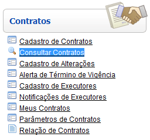

Consultar Contratos [ Voltar ]
Utilize esta tela para localizar e abrir contratos
registrados no sistema.
O formulário "Consultar
contratos" encontra-se dentro do menu "Contratos".

Ao clicar no formulário, o sistema exibirá a seguinte
tela:
1º
Passo: configure os filtros da pesquisa para localizar o contrato
desejado. À
medida que os filtros são preenchidos, os resultados são exibidos
automaticamente na tabela de resultados. Para abrir um contrato
na tela "Cadastro de
contratos", selecione o registro desejado com um clique.
Os filtros
disponíveis para auxiliar a localização do contrato são:
- Tipo. Se desejar que os resultados da
pesquisa retornem apenas contratos de um determinado tipo,
especifique-o aqui:
- Contrato;
- Termo de Concessão;
- Termo de Cessão;
- Termo de Permissão;
- Termo de Cooperação Técnica;
- Contrato de Comodato;
- Contrato de Gestão;
- Termo de Ajuste de Conduta;
- Termo de Doação; e
- Termo de Compromisso.
- Categoria. Após
selecionar um tipo de contrato, as categorias relativas a este serão
exibidas neste campo de opções. Se desejar que os resultados da
pesquisa retornem apenas uma determinada categoria de contrato,
selecione com um clique o tipo de contrato e, em seguida, a categoria
do mesmo.
- N°. do contrato.
Para filtrar contratos que contêm um determinado conjunto de números,
informe-o aqui.
- Objeto.
Digite aqui os caracteres iniciais do objeto referente ao contrato que
deseja localizar. A pesquisa imediatamente retornará contratos cujo
objeto se inicia com os caracteres digitados.
- Nome / Razão social. Digite aqui os caracteres
iniciais
do nome ou razão social referente ao contrato que deseja localizar. A
pesquisa
imediatamente retornará contratos cuja razão social se inicia com os
caracteres
digitados.
- Término da vigência.
Informe aqui a data de término de vigência para que a pesquisa retorne
contratos com término igual ou posterior à data informada.
- Criado em. Informe
aqui uma data de criação para que a pesquisa retorne
contratos com data de criação igual ou posterior à data informada.
Dicas para
preenchimento dos campos de data:
- Data
atual: digite o sinal . (ponto) e
pressione a tecla "Enter" para que o sistema retorne a data atual;
- Data
do mês corrente: digite o dia do mês e
pressione a tecla "Enter" para que o sistema retorne o mês e ano
correntes;
- Dias
a contar da data atual: digite o sinal + (mais) ou - (menos)
antes do número de dias em referência à data atual e pressione
a
tecla "Enter" para a data anterior ou posterior à data atual.
Exemplo: se a data
atual é 20/10/2010,
digite "+10"
e pressione a tecla "Enter" para que o sistema retorne o dia 30/10/2010
2° Passo: selecione
com um clique o contrato desejado. Após o clique, o
usuário será direcionado à tela "Cadastro
de contratos".
Ir
para o topo da página
|